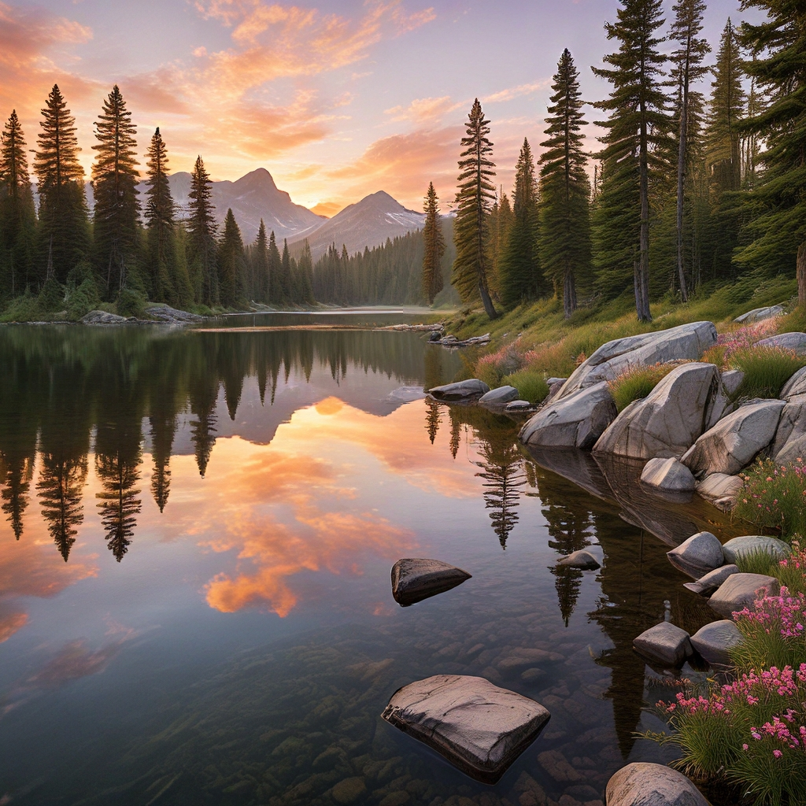

이미지 생성 팁
AiCasso로 이미지를 만드는 것은 쉽고 재미있습니다! 매우 정확해야 하거나 문법이 완벽해야 한다는 걱정은 하지 마세요. 당신이 생각하는 것을 설명하기만 하면 AiCasso가 나머지를 처리합니다. 특정 스타일을 찾고 있거나, 풍경, 초상화 또는 정사각형 이미지를 원하든, AiCasso는 당신이 원하는 것을 이해할 만큼 똑똑합니다. 문법 실수를 하거나 지침을 정확히 따르지 않더라도 말이죠.
예시:
프롬프트: "해질녘의 산이 있는 평화로운 호수, 그런 멋진 옛 그림처럼, 정사각형 사진, 동물이나 배는 없음."

결과: AiCasso는 바르크 양식에서 영감을 받은 아름다운 해질녘의 산 호수를 생성하며, 동물이나 배는 없고 정사각형 형식으로 제공됩니다.
프롬프트: "추상 미술처럼 밝은 색상의 미친 물결, 초상화 크기, 형태나 물체는 없음."
결과: AI는 인식 가능한 형태 없이 생동감 넘치는 색상의 추상적인 물결을 생성하며, 추상 표현주의 스타일을 따르고 초상화 형식으로 제공됩니다.
프롬프트: "슈퍼히어로로서의 재미있는 만화 고양이, 3D 스타일, 풍경, 귀엽고 무섭지 않게."
결과: 이것은 슈퍼히어로 복장을 한 사랑스러운 3D 만화 고양이를 생성하며, 장난스럽고 무섭지 않은 분위기로 풍경 형식으로 표시됩니다.
스타일 향상
어떤 스타일을 선택해야 할지 모르겠나요? 걱정하지 마세요! 문법적으로 맞지 않더라도 떠오르는 어떤 스타일이라도 언급하면 AiCasso가 사용 가능한 스타일 목록에서 알아낼 것입니다.
- 기본: 특정 예술적 영향 없이 균형 잡힌 중립적인 스타일.
- 향상: 세부 사항과 전체 미적 요소를 약간 개선합니다.
- 영화 같은 디바: 강한 조명 대비로 극적이고 영화 같은 효과를 추가합니다.
- 추상 표현주의: 추상적인 형태와 생동감 넘치는 색상의 물결을 강조합니다.
- 아카데미아: 이미지에 학문적이고 고전적인 느낌을 추가합니다.
- 액션 피규어: 액션 피규어의 과장되고 역동적인 스타일로 이미지를 생성합니다.
- 사랑스러운 3D 캐릭터: 귀엽고 만화 같은 3D 캐릭터를 생성합니다.
- 사랑스러운 카와이: 카와이 문화의 전형적인 귀엽고 매력적인 스타일을 강조합니다.
- 아르 데코: 아르 데코 시대의 기하학적이고 장식적인 스타일을 사용합니다.
- 아르 누보: 아르 누보의 전형적인 흐르는 선과 자연에서 영감을 받은 요소를 추가합니다.
- 천체 오라: 신비롭고 다른 세계의 분위기를 만듭니다.
- 아방가르드: 혁신적이고 실험적인 예술 표현에 중점을 둡니다.
- 바로크: 바로크 시대의 극적이고 세밀하며 정교한 스타일을 사용합니다.
- 바우하우스 스타일 포스터: 바우하우스의 미니멀하고 기능적인 디자인 원칙을 반영합니다.
- 청사진 도면: 기술 청사진을 닮은 이미지를 생성합니다.
- 캐리커처: 과장되고 만화 같은 초상화를 생성합니다.
- 셀 음영 아트: 셀 음영 애니메이션의 전형적인 평평하고 대담한 색상을 사용합니다.
- 캐릭터 디자인 시트: 애니메이션에 적합한 깔끔하고 명확한 캐릭터 디자인에 중점을 둡니다.
- 고전주의 미술: 고대 고전의 세련되고 이상화된 미술 스타일을 모방합니다.
- 색면화: 색의 평면을 만들기 위해 단일 색상의 큰 영역을 특징으로 합니다.
- 색연필 아트: 색연필 그림의 질감과 외관을 모방합니다.
- 개념 미술: 미적 또는 물질적 관심보다 아이디어와 개념을 우선시합니다.
- 구성주의: 구성주의 운동의 산업적이고 기하학적인 스타일을 반영합니다.
- 입체파: 물체를 기하학적 형태로 분해하고 추상적인 형태로 제시합니다.
- 다다이즘: 부조리, 비합리성 및 반예술 미학을 강조합니다.
- 어두운 판타지: 어둡고 섬뜩한 요소로 음침하고 고딕적인 분위기를 만듭니다.
- 어두운 우울한 분위기: 낮은 조명과 그림자를 사용하여 우울한 분위기를 만듭니다.
- DMT 아트: DMT 경험에서 영감을 받은 생동감 넘치는 환각적인 비주얼을 특징으로 합니다.
- 낙서 아트: 종종 복잡하고 세밀한 장난스럽고 유쾌한 드로잉 스타일을 강조합니다.
- 더블 노출: 두 이미지를 하나로 결합하여 초현실적이고 층이 있는 효과를 만듭니다.
- 물감 방울 튀기기: 튀고 방울지는 물감을 사용하여 역동적이고 혼란스러운 구성을 만듭니다.
- 표현주의: 사실적인 표현보다 감정 표현을 우선시하며, 종종 대담한 색상과 극적인 형태를 사용합니다.
- 희미한 폴라로이드 사진: 희미한 폴라로이드 사진의 오래되고 향수 어린 모습을 모방합니다.
- 포비즘: 포비스트 운동에서 영감을 받은 생동감 넘치는 비자연적인 색상과 대담한 붓질을 사용합니다.
- 평면 2D: 최소한의 음영이나 깊이로 단순하고 평평한 디자인을 강조하며, 종종 만화 스타일입니다.
- 포트나이트 스타일: 포트나이트 비디오 게임의 전형적인 생동감 넘치고 만화 같은 미술 스타일을 반영합니다.
- 미래주의: 역동적인 움직임, 에너지 및 미래 기술의 묘사에 중점을 둡니다.
- 글리치코어: 왜곡된 비주얼과 함께 디지털 오류와 글리치를 예술적 스타일로 강조합니다.
- 글로-파이: 부드럽고 빛나는 조명을 사용하여 꿈같고 천상의 분위기를 만듭니다.
- 구기 스타일: 20세기 중반의 미래적이고 우주 시대 디자인 트렌드를 반영합니다.
- 그래피티 아트: 그래피티와 도시 벽화의 전형적인 생동감 넘치는 거리 스타일 미학을 사용합니다.
- 할렘 르네상스 아트: 할렘 르네상스의 풍부한 문화적 및 예술적 표현을 반영합니다.
- 하이 패션: 세련되고 정교하며 아방가르드한 하이 패션 미학을 강조합니다.
- 이상적인: 평화롭고 고요하며 종종 전원적인 분위기를 만듭니다.
- 인상주의: 느슨한 붓질과 생동감 넘치는 색상을 사용하여 빛과 분위기의 효과를 포착합니다.
- 인포그래픽 드로잉: 정보를 그래픽적으로 제시하기 위해 명확하고 시각적으로 매력적인 레이아웃을 강조합니다.
- 잉크 방울 드로잉: 드로잉에서 유동적이고 방울지는 효과를 만들기 위해 잉크를 사용합니다.
- 일본 잉크 드로잉: 일본 잉크 예술의 전통적인 붓질 기법과 미학을 모방합니다.
- 노링 사진: 종종 위에서 촬영된 물체의 깔끔하고 정돈된 배열을 강조합니다.
- 밝고 쾌활한 분위기: 밝은 색상과 조명을 사용하여 쾌활하고 고양된 분위기를 만듭니다.
- 로고 디자인: 깔끔하고 인지 가능한 로고 및 브랜딩 요소를 만드는 데 중점을 둡니다.
- 사치스러운 우아함: 종종 풍부한 질감과 재료로 세련미와 사치를 강조합니다.
- 매크로 사진: 극단적인 클로즈업에 중점을 두며, 육안으로는 보이지 않는 복잡한 세부 사항을 드러냅니다.
- 만다라 아트: 전통적인 만다라 디자인에서 영감을 받은 복잡하고 대칭적인 패턴을 만듭니다.
- 마커 드로잉: 마커 드로잉의 전형적인 대담하고 생동감 넘치는 선과 색상을 모방합니다.
- 중세주의: 중세 시대의 미술 및 디자인 미학을 반영합니다.
- 미니멀리즘: 단순성과 형태를 본질적인 요소로 축소하는 것을 강조합니다.
- 신바로크: 현대적 영향을 받은 바로크 시대의 화려하고 극적인 스타일을 부활시킵니다.
- 신비잔틴: 비잔틴 제국의 화려하고 종교적인 미술 스타일과 현대적 요소를 결합합니다.
- 신미래주의: 종종 세련되고 하이테크 미학을 가진 미래적 디자인에 중점을 둡니다.
- 신인상주의: 신인상주의 운동에서 영감을 받아 색상의 작은 뚜렷한 점을 사용하여 이미지를 생성합니다.
- 신로코코: 현대적인 변형을 가진 로코코 시대의 복잡하고 장식적인 스타일을 부활시킵니다.
- 신고전주의: 고대 고전의 미술 및 디자인 미학을 모방하며 조화와 단순성을 강조합니다.
- 오프 아트: 기하학적 패턴과 대비를 사용하여 시각적 착시와 효과를 만듭니다.
- 화려하고 복잡한: 장식에 중점을 두고 매우 세밀하고 정교한 디자인에 중점을 둡니다.
- 연필 스케치 드로잉: 연필 스케치의 질감과 외관을 모방합니다.
- 팝 아트: 대중 문화와 대중 매체에서 영감을 받은 대담한 색상과 이미지를 사용합니다.
- 로코코: 로코코 시대의 화려하고 장식적인 미술 스타일을 반영하며, 가벼움과 우아함을 강조합니다.
- 실루엣 아트: 빛과 그림자 사이의 강한 대비를 사용하여 대담한 실루엣 기반 이미지를 만듭니다.
- 단순 벡터 아트: 벡터 아트의 전형적인 깔끔한 기하학적 형태와 평면 색상을 강조합니다.
- 스케치업: 스케치업 소프트웨어를 사용하여 생성된 3D 모델의 외관과 느낌을 모방합니다.
- 스팀펑크: 빅토리아 시대의 미학과 증기 동력 기술을 결합하여 복고풍 미래적 스타일을 만듭니다.
- 초현실주의: 현실과 꿈 같은 이미지를 혼합하여 초현실적이고 환상적인 장면을 만듭니다.
- 최고주의: 기본 기하학적 형태와 제한된 색상 팔레트에 중점을 두며, 최고주의 운동에서 영감을 받습니다.
- 테라겐: 테라겐 소프트웨어를 사용하여 생성된 사실적인 컴퓨터 생성 풍경을 모방합니다.
- 평화롭고 편안한 분위기: 부드러운 색상과 차분한 이미지를 사용하여 평화롭고 고요한 환경을 만듭니다.
- 스티커 디자인: 스티커에 적합한 장난스럽고 만화 같은 이미지를 만드는 데 중점을 둡니다.
- 생동감 넘치는 가장자리 조명: 주위에 밝고 생동감 넘치는 조명을 강조하여 인상적이고 생동감 있는 효과를 만듭니다.
- 볼륨 조명: 빛의 광선과 대기 효과를 사용하여 깊이와 차원을 만듭니다.
- 수채화: 수채화의 부드럽고 흐르는 질감을 모방합니다.
- 장난스럽고 유쾌한: 가벼운 마음으로 상상력이 풍부하고 종종 기발한 이미지를 강조합니다.
- 선명한: 더 선명한 외관을 위해 선명도와 가장자리 정의를 향상시킵니다.
- 걸작: 고품질, 세밀하고 다듬어진 예술적 출력을 강조합니다.
- 사진: 사실적이고 생생한 사진 품질을 목표로 합니다.
- 네거티브: 색상을 반전시켜 사진 음화 효과를 만듭니다.
- 광고 - 광고: 광고에 적합한 깔끔하고 전문적인 비주얼에 중점을 둡니다.
- 광고 - 자동차: 역동적이고 세련된 자동차 광고를 위한 시각적 스타일을 맞춤화합니다.
- 광고 - 기업: 기업 환경에 적합한 세련되고 전문적인 디자인을 강조합니다.
- 광고 - 패션 편집: 패션 편집에서 사용되는 스타일리시하고 하이 패션의 모습을 강조합니다.
- 광고 - 음식 사진: 음식 사진의 전형적인 생동감 넘치고 식욕을 돋우는 모습을 최적화합니다.
- 광고 - 고급 음식 사진: 고급 음식 사진의 풍부하고 세밀한 미학을 강조합니다.
- 광고 - 사치: 고급 브랜드에 적합한 화려하고 고급스러운 스타일에 중점을 둡니다.
- 광고 - 부동산: 부동산 광고의 전형적인 깔끔하고 매력적인 비주얼을 강조합니다.
- 광고 - 소매: 소매 광고에 적합한 매력적이고 소비자 중심의 스타일을 강조합니다.
- 하이퍼리얼리즘: 매우 세밀하고 사실적인 시각적 스타일을 추구합니다.
- 점묘법: 점묘법 운동에서 영감을 받아 색상의 작은 뚜렷한 점을 사용하여 이미지를 생성합니다.
- 환각적인: 환각 미술에서 영감을 받은 생생한 색상과 초현실적인 비주얼을 강조합니다.
- 르네상스: 르네상스 미술의 조화롭고 고전적인 스타일을 반영합니다.
- 타이포그래피: 텍스트와 글꼴의 창의적이고 예술적인 사용에 중점을 둡니다.
- 미래적 생체 기계: 미래적이고 생체 기계적인 요소를 결합하여 하이테크 유기적 스타일을 만듭니다.
- 미래적 생체 기계 사이버펑크: 생체 기계적이고 사이버펑크 미학을 결합하여 거칠고 미래적인 모습을 만듭니다.
- 미래적 사이버네틱: 하이테크 사이버네틱 비주얼에 중점을 둡니다.
- 미래적 사이버네틱 로봇: 미래적인 엣지를 가진 로봇 및 사이버네틱 디자인을 강조합니다.
- 미래적 사이버펑크 도시 풍경: 사이버펑크 미술의 전형적인 거칠고 네온 조명이 있는 도시 풍경을 반영합니다.
- 미래적 공상과학: 미래적이고 공상과학에서 영감을 받은 미학에 중점을 둡니다.
- 미래적 복고풍 사이버펑크: 복고풍과 사이버펑크 요소를 결합하여 향수를 불러일으키는 동시에 미래적인 스타일을 만듭니다.
- 미래적 복고풍: 미래적 비주얼과 복고풍 디자인 요소를 결합합니다.
- 미래적 베이퍼웨이브: 베이퍼웨이브 미술의 전형적인 향수 어린 초현실적인 비주얼을 강조합니다.
- 게임 버블: 캐주얼 게임에서 자주 볼 수 있는 장난스럽고 거품 같은 미학에 중점을 둡니다.
- 게임 사이버펑크: 게임 디자인 요소와 사이버펑크 미학을 결합합니다.
- 게임 격투: 격투 게임의 전형적인 역동적이고 강렬한 스타일을 반영합니다.
- 게임 GTA: 그랜드 테프트 오토 게임의 전형적인 거칠고 도시적인 스타일을 모방합니다.
- 게임 마리오: 마리오 게임의 전형적인 생동감 넘치고 만화 같은 스타일에 중점을 둡니다.
- 게임 마인크래프트: 마인크래프트의 전형적인 블록형 픽셀화 스타일을 모방합니다.
- 게임 포켓몬: 포켓몬 게임의 전형적인 생동감 넘치고 애니메이션에서 영감을 받은 스타일을 반영합니다.
- 게임 복고풍 아케이드: 복고풍 아케이드 게임의 전형적인 향수 어린 픽셀화 스타일을 강조합니다.
- 게임 RPG 판타지: RPG 게임의 전형적인 세밀하고 판타지에서 영감을 받은 미학을 반영합니다.
- 게임 전략: 전략 게임의 전형적인 깔끔하고 기능적인 디자인에 중점을 둡니다.
- 게임 스트리트파이터: 스트리트 파이터 게임의 전형적인 대담하고 역동적인 스타일을 모방합니다.
- 게임 젤다: 젤다 게임의 전형적인 판타지에서 영감을 받은 스타일을 반영합니다.
- 기타 건축: 깔끔하고 정밀한 건축 렌더링에 중점을 둡니다.
- 기타 디스코: 디스코 문화의 전형적인 생동감 넘치고 네온 조명이 있는 미학을 강조합니다.
- 기타 꿈의 풍경: 초현실적이고 꿈 같은 환경을 만듭니다.
- 기타 디스토피아: 디스토피아 환경의 전형적인 거칠고 암울한 비주얼을 반영합니다.
- 기타 동화: 동화의 전형적인 장난스럽고 마법 같은 요소를 강조합니다.
- 기타 고딕: 고딕 미술과 건축의 전형적인 어둡고 화려한 스타일을 반영합니다.
- 기타 그런지: 그런지 문화의 전형적인 거칠고 원초적인 미학을 강조합니다.
- 기타 공포: 공포의 전형적인 어둡고 섬뜩하며 불안한 비주얼에 중점을 둡니다.
- 기타 카와이: 카와이 문화의 전형적인 귀엽고 매력적인 스타일을 반영합니다.
- 기타 러브크래프트: 러브크래프트 소설의 전형적인 섬뜩하고 우주적인 공포를 강조합니다.
- 기타 섬뜩한: 어둡고 병적인 불안한 주제에 중점을 둡니다.
- 기타 만화: 만화의 전형적인 대담하고 역동적인 스타일을 모방합니다.
- 기타 대도시: 현대 대도시의 전형적인 세련되고 도시적인 미학을 반영합니다.
- 기타 미니멀리스트: 단순성과 형태를 본질적인 요소로 축소하는 것을 강조합니다.
- 기타 단색: 단일 색상의 다양한 음영으로 생성된 이미지를 강조합니다.
- 기타 해양: 해양 테마의 전형적인 해양에서 영감을 받은 미학을 반영합니다.
- 기타 우주: 우주 환경의 전형적인 광대하고 다른 세계의 비주얼을 강조합니다.
- 기타 스테인드 글라스: 스테인드 글라스 아트의 전형적인 복잡하고 다채로운 디자인을 모방합니다.
- 기타 테크웨어 패션: 테크웨어 패션의 전형적인 미래적이고 기능적인 미학에 중점을 둡니다.
- 기타 부족: 부족 미술의 전형적인 대담하고 문화적인 미학을 반영합니다.
- 기타 젠탱글: 젠탱글 아트의 전형적인 복잡하고 반복적인 패턴을 강조합니다.
- 종이 공예 콜라주: 잘라낸 종이를 사용하여 층이 있는 질감의 콜라주를 만듭니다.
- 종이 공예 평면 컷: 평면적으로 잘라낸 종이 디자인을 강조합니다.
- 종이 공예 기리감이: 기리감이의 전형적인 복잡하고 접힌 디자인에 중점을 둡니다.
- 종이 공예 종이 마쉐: 종이 마쉐를 사용하여 질감이 있는 3차원 형태를 만듭니다.
- 종이 공예 종이 퀼링: 종이 퀼링의 전형적인 섬세하고 말린 종이 디자인을 강조합니다.
- 종이 공예 종이 컷 콜라주: 잘라낸 종이 요소를 결합하여 층이 있는 콜라주를 만듭니다.
- 종이 공예 종이 컷 그림자 상자: 층이 있는 종이 컷을 사용하여 3차원 그림자 상자를 만듭니다.
- 종이 공예 쌓인 종이 컷: 층이 있는 쌓인 종이 디자인에 중점을 둡니다.
- 종이 공예 두꺼운 층의 종이 컷: 두꺼운 종이 컷 디자인의 전형적인 차원적이고 층이 있는 모습을 강조합니다.
- 사진 외계인: 초현실적이고 외계적인 비주얼에 중점을 둡니다.
- 사진 필름 느와르: 필름 느와르의 전형적인 어둡고 우울한 미학을 강조합니다.
- 사진 글래머: 글래머 사진의 전형적인 세련되고 스타일리시한 모습을 강조합니다.
- 사진 HDR: 높은 동적 범위(HDR)를 사용하여 다양한 빛과 색상의 이미지를 생성합니다.
- 사진 아이폰 사진: 아이폰 사진의 전형적인 깔끔하고 현대적인 스타일을 모방합니다.
- 사진 장시간 노출: 장시간 노출을 사용하여 역동적이고 움직임이 흐릿한 효과를 만듭니다.
- 사진 네온 느와르: 네온 조명과 느와르의 어둡고 우울한 미학을 결합합니다.
- 사진 실루엣: 빛과 그림자 사이의 강한 대비를 사용하여 실루엣 기반 이미지를 만듭니다.
- 사진 틸트 시프트: 틸트 시프트 효과를 사용하여 미니어처 같은 장난감 같은 모습을 만듭니다.
- 3D 모델: 3D 모델의 전형적인 깔끔하고 세밀한 외관에 중점을 둡니다.
- 아날로그 필름: 아날로그 필름 사진의 전형적인 거칠고 질감 있는 모습을 모방합니다.
- 애니메이션: 애니메이션의 전형적인 생동감 넘치고 역동적인 스타일을 강조합니다.
- 영화 같은: 강한 조명과 구성을 사용하여 극적이고 영화 같은 효과를 만듭니다.
- 만화책: 만화책 아트의 전형적인 대담한 선과 생동감 넘치는 색상을 사용합니다.
- 공예 점토: 점토 모델의 질감이 있는 수제 느낌을 모방합니다.
- 디지털 아트: 깔끔하고 다듬어진 디지털 아트워크에 중점을 둡니다.
- 판타지 아트: 판타지 아트의 전형적인 세밀하고 상상력이 풍부한 비주얼을 강조합니다.
- 등각 투영: 등각 투영 관점을 사용하여 3차원적인 모습을 만듭니다.
- 선 아트: 세밀한 드로잉을 만들기 위해 깔끔하고 선명한 선에 중점을 둡니다.
- 로우 폴리: 미니멀하고 기하학적인 모습을 만들기 위해 저폴리곤 3D 모델을 사용합니다.
- 네온펑크: 네온 조명과 사이버펑크의 거친 미학을 결합합니다.
- 종이접기: 종이접기의 전형적인 복잡하고 접힌 디자인에 중점을 둡니다.
- 사진적: 사실적이고 생생한 비주얼을 목표로 합니다.
- 픽셀 아트: 복고풍 비디오 게임에서 영감을 받은 픽셀화된 디자인을 사용합니다.
- 질감: 시각적 깊이를 향상시키기 위해 풍부하고 세밀한 질감에 중점을 둡니다.